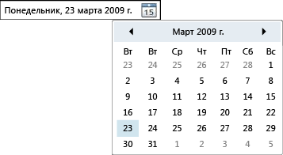

DatePicker
DatePicker Управления позволяет пользователю выбрать дату, либо путем ввода его в текстовое поле или с помощью раскрывающегося списка Calendar элемента управления.
На следующем рисунке показано DatePicker.

Элемент управления DatePicker
Многие из DatePicker свойства элемента управления, для управления его встроенным Calendarи функция идентична эквивалентное свойство в Calendar. В частности DatePicker.IsTodayHighlighted, DatePicker.FirstDayOfWeek, DatePicker.BlackoutDates, DatePicker.DisplayDateStart, DatePicker.DisplayDateEnd, DatePicker.DisplayDate, и DatePicker.SelectedDate свойства работать идентично их Calendar аналоги. Дополнительные сведения см. в разделе Calendar.
Пользователи могут ввести дату непосредственно в текстовое поле, задающее Text свойство. Если DatePicker невозможно преобразовать введенную строку в допустимую дату, DateValidationError событие будет вызываться. По умолчанию, это вызывает исключение, но обработчик событий для DateValidationError можно задать ThrowException свойства false и предотвратить возникновение исключения.